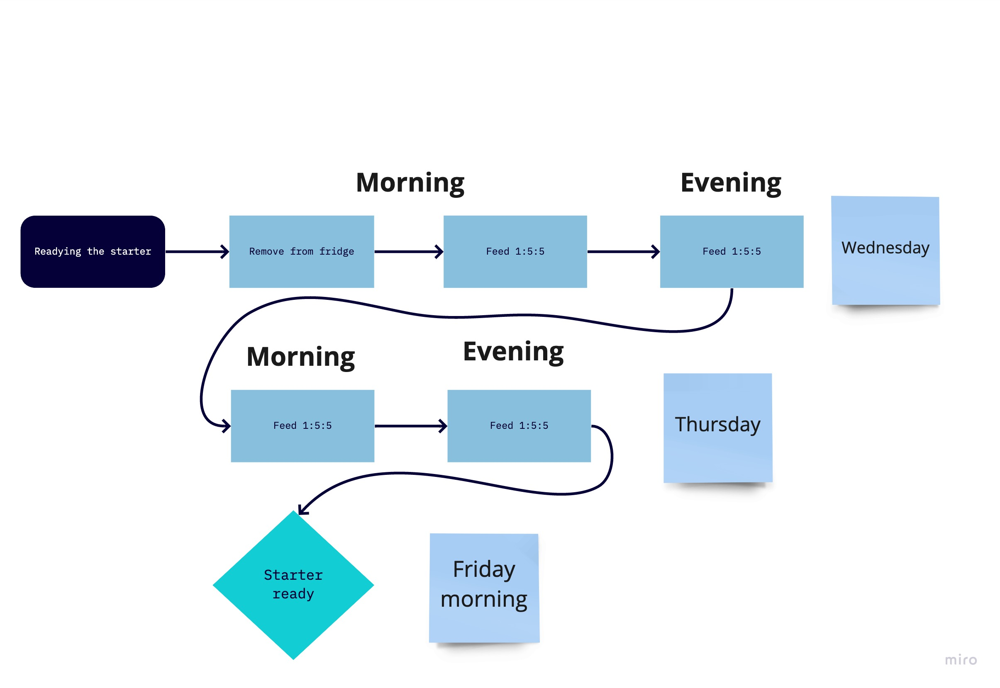
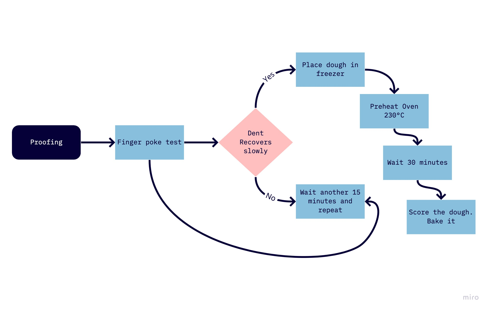

Lovely sourdough bread recipe made by Hendrik from theBreadCode. You'll only need an active sourdough stater, simple ingredients and a love for bread!
| Flour % Protein | % Hydration | Grams Water (for 500g Flour) |
| < 10 | 55 | 275 |
| 10-12 | 60 | 300 |
| 13-14 | 65 | 325 |
| > 15 | 70 | 350 |
The key to making great sourdough bread is to control the fermentation process. This is the one parameter that you need to understand and master, the rest is just 20%. That's why you want to make sure to have a healthy and active sourdough starter.
Your sourdough should be able to double in size within 5-10 hours after a feeding at room temperature. If it does, then perfect. If not, consider feeding your starter with the below shown process. Furthermore you want to check out this video on 4 tips that will make your sourdough starter more active.
Note the 1:5:5 in the image means, 10 grams of sourdough starter, 50 grams of flour and 50 grams of water. You want to be feeding ideally whole rye, or whole wheat flour. This will make a more active sourdough starter.
In the morning on Friday you want to mix everything together. This starts the bulk fermentation stage. Bulk since you could actually be doubling all the ingredients and then you could make 2..N breads at the same time.
Let the dough sit for another 15 minutes covered. I like to use a large metal pot. This makes sure the gluten network forms again after we damaged it while adding the starter.
Next up we want to create dough strength. There are multiple ways we can do that, however for this recipe we will be doing a set of bench kneading only. The higher you go in hydration, the more dough strength you have to build. You could of course also be using a mixer to do the same thing.
Great. You have now built a dough with a lot of strength. Return the dough to your container, it should be a nice and smooth round ball. If it is not, wait another 15 minutes, return it to the surface, practice rounding the dough ball one more time.
Make sure that your dough sample has been properly marked in the container. It's crucial that you homogenized the dough properly initially, else the dough sample might be slower or faster than the main dough. Ideally both should be close together and the dough should be the same temperature as your room temperature. This way both doughs ferment at the same speed.
Depending on the amount of protein (out of which 80% is gluten for wheat), we need to aim for a different size increase. The more gluten you have, the more you can inflate the dough. This is crucial to know. Furthermore, the more gluten you have, the longer you can ferment your dough. Over time the gluten is damaged by the acid produced by sourdough resulting in a weaker gluten network. You'll notice that for instance if your dough was nice and round and then suddenly it's very sticky.
| Four % Protein | % Size Increase |
| < 10 | 10-20 |
| 10-12 | 20-40 | 13-14 | 40-70 |
| > 15 | 70-110 |
While your dough is bulk fermenting, you can be doing a stretch and fold every few hours. Typically when you see your dough has flattened out quite a lot. However, the more you touch your dough, the more even your crumb is going to be in the end.
Coil folding is a great way to stretch and fold and every gentle on the dough:
This can take anywhere between 4 and 12 hours. Check out this table that shows fermentation times depending on your temperature. Please also take this with a grain of salt, as this might differ depending on your starter and other issues. The sample is the single best way to check your fermentation progress.
Your dough should look bubbly. Proceed and shape when your sample has reached the desired size increase. A tight shaping is essential to then allow your dough to spring in the oven. At the same time you have to be careful to not deflate your dough too much.
The proofing stage is essential to inflate the tightened gluten network again. It's sometimes a little hard to make this work with your schedule. This is where your fridge comes in handy as you can decide when you want to bake your bread.
Will take 2-4 hours at room temperature (until the finger poke test is passed). Place shortly before the finger poke test passes in the freezer for 45 minutes to make scoring easier
Or - place for 1 hour at room temperature, then another 6-24 hours in the fridge. This way your bread will be ready directly for breakfast.
Baking is then the last stage where everything comes together. You can either bake using a dutch oven, or using a tray and/or a stone. Make sure that the baking medium is preheated, as this makes sure that you have more oven spring.
Preheat oven for maximum for at least 30 minutes
Good job. The dough should flatten out a little bit, but then spring back in the oven.
Enjoy!